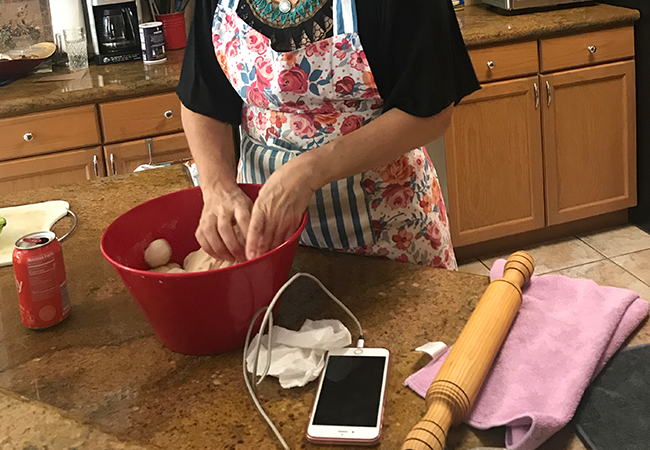
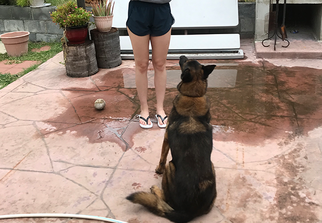

When the coronavirus caused us to go into quarantine in March, I had no idea what to do with all the time I would be spending at home. Not being able to go out and meet up with friends was really difficult. I decided I needed to do something to help me stay sane.
| Goal | Activities | Thoughts |
|---|---|---|
| Creative outlet | Drawing, painting, puzzles | Really fun and relaxing |
| Learn new things | Cooking, gardening, training dog | Helped me get out of my comfort zone |
I'm definitely not an artist, but I do enjoy being creative! I brainstormed a few creative things I could try, and then got to creating.
Allowing myself to have creative outlets let me to wanting to learn new things. The kitchen is usually an intimidating place for me, I've never been a great cook. I asked my mom to teach me some of the recipes that she always made for us when we were living at home. And while I was learning new things, I decided I should teach my dog some new tricks as well!
 